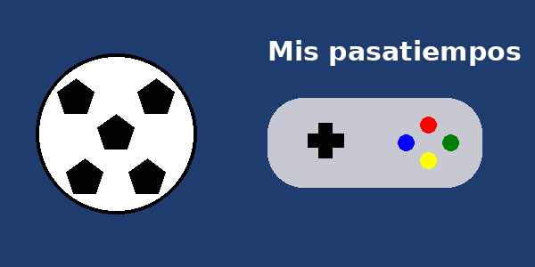
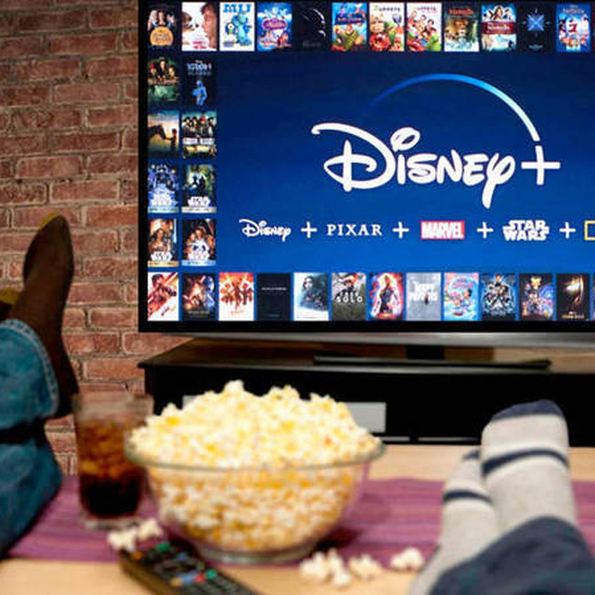
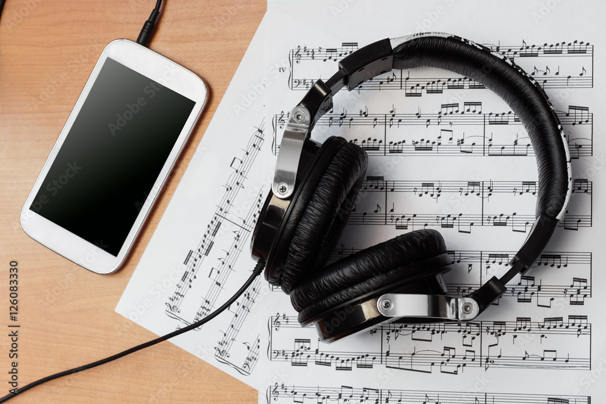

Nuestros pasatiempos
En esta página presentamos las actividades favoritas que realizamos
en nuestro tiempo libre . Cada pasatiempo nos ayuda a descansar ,
aprender cosas nuevas y compartir con amigos y familia.
Ir a la lista | Ir a la tabla | Ir a multimedia

Lista de pasatiempos
Pasatiempos favoritos
Jugar fútbol
Jugar videojuegos
Escuchar música
Ver películas y series
Programar páginas web
Pasatiempos clasificados por tipo
Deportivos
Tecnológicos
Videojuegos
Programación web con HTML
Culturales
Pasos para crear una página web en el tiempo libre
Instalar Visual Studio Code
Crear la carpeta del proyecto
Crear el archivo HTML
Abrir la página en el navegador
Horario semanal de pasatiempos
Tiempo dedicado a cada pasatiempo
Tipo
Pasatiempo
Día
Horas
Deportivo
Fútbol
Sábado
2
Ciclismo
Domingo
1
Tecnológico
Videojuegos
Viernes
2
Programación web
Miércoles
1
Cultural
Música y cine
Todos los días
1
Total de horas a la semana
7
Imagen representativa de nuestros pasatiempos:


Video de uno de nuestros pasatiempos:
VIDEO
Inicio |
Sobre nosotros |
Pasatiempos